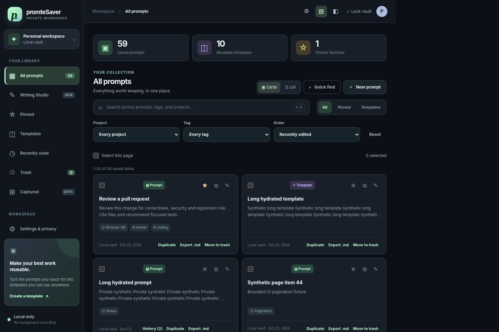
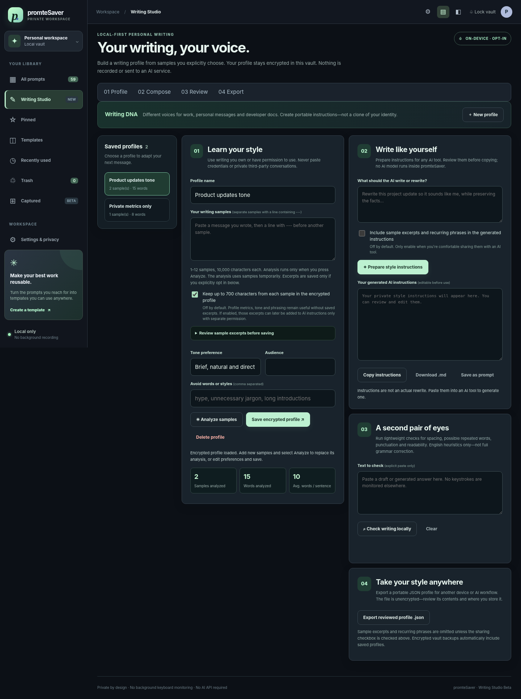

Find instantly
Quick search, projects, tags, favorites and keyboard-first reuse.
Save prompts that work, organize them into reusable templates, and develop your writing style. A calm local workspace, with opt-in browser capture and cloud writing assistance.
Designed around everyday work: navigation, search, and details in one focused layout.

Screenshot uses synthetic records in a Chromium fixture. Native Windows/Mac installers are not validated.
Quick search, projects, tags, favorites and keyboard-first reuse.
Fill variables and preview the finished prompt before copying.
Opt-in writing profiles and editable instructions for external AI tools.
Passphrase lock, encrypted record storage, backups and recoverable drafts.
Build writing profiles from samples you explicitly provide. Generate reviewable instructions and use lightweight, offline proofreading.

The developer pilot has no telemetry, covert recording or account requirement. Optional Groq requests send only text you explicitly review and approve. Opt-in browser send snapshots and local hints target three AI sites; real-site compatibility is not yet verified. Full database encryption, OS keychain integrations, real installers and independent security review remain future release gates.